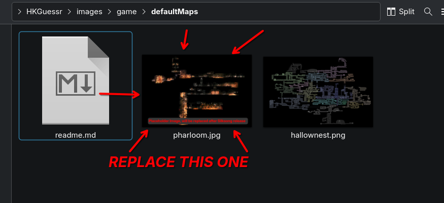

https://github.com/Logboy2000/HKGuessr/archive/refs/heads/main.zip
OR
git
clone
https
://github.com/logboy2000/HKGuessr.git
HKGuessr/images/game/defaultMaps
pharloom.jpg with the real full Silksong map
The map must be named pharloom.jpg EXACTLY

Discord Username: logboy2000